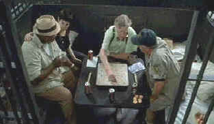

|
Cookie's Fortune(SE)/C+,B |
|
October/1999/118m/WS 1.85, FS 1.33 |
Cookie’s
Fortune is set in a small Southern town ripe with
eccentricities that make the South a favorite of filmmakers
looking for the precious and off-beat. Robert Altman brings his
rambling style of filmmaking to Cookie’s Fortune,
introducing more characters in a few minutes than most films can
reasonably support. This is mediocre Altman, lacking the bite
and sharp wit that much of his work contains.
 |
|
Scrabble in a cell. ©Universal |
Following
the fortunes of Cookie and Willis, Camille and Cora, and Emma
and Jason, Altman skillfully combines the various stories into
one. Cookie’s Fortune is comedy based on the
dysfunctional nature of its characters. The comic plot is
contrived. The direction taken by Cookie’s Fortune was not
wholly satisfying. The best moments in Cookie’s Fortune
involve Cookie and Willis. Cookie has all too little screen time
and the banter between she and her Willis is delicious.
.
Patricia
Neal is lovely as Cookie. I was amazed at her screen presence
after all these years. Just think, fifty years ago the actress
was starring in films like The Fountainhead and The
Day the Earth Stood Still. And now, many years after a
debilitating stroke, she still lights up the screen. Charles
Dutton makes Willis a grand character, full of unexpected wisdom
and love. Liv Tyler is totally appealing as Emma and Glenn Close
gets to be her nasty screen self as Miss Camille and Julianne
Moore is spaced out as Cora.
Cookie’s Fortune is presented in both a Full Screen 1.33 version and a widescreen 1.85 letterboxed version on this DVD from USA Home Entertainment. Colors are well defined with rich blacks and subtle textures in the darker scenes. Detail is mostly excellent with a few soft moments that are hardly noticeable. The film has a clear Dolby Digital 5:1 Surround track with some ambience detail. The pyrotechnics here is in the dialogue. Robert Altman focuses mainly on story points in his audio commentary. Expect some long silences between insights. Access the commentary from the language selection menu.
|
The
Feature
Archive has articles ranging from John
Ford to Blonde
Bimbos, The
Heistmasters, Akira
Kurosawa and Frank
Darabont. |
|
Imaging
Science Foundation |
|
HOT
LINKS The
Home Theater Forum |
|
Home Theater Reference Reviewing System When you read a DVD review it's of utmost importance to know what equipment is being used to evaluate quality. Click on the projectors to find out more. |